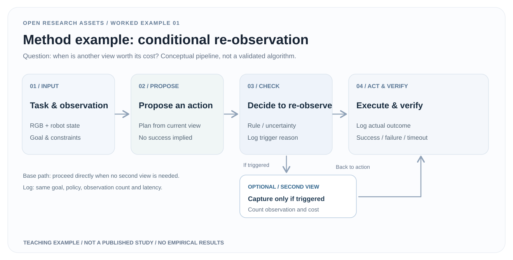

01 / METHOD
方法机制Proposed mechanism
初始视角 → 行动候选 → 预设规则判断是否追加观察 → 执行与核验。触发机制、相机条件和回退逻辑尚未实现。Initial view → candidate action → predefined re-observation gate → execution and verification. Trigger, sensor conditions and fallback are not implemented.
QUESTION FIRST / EVIDENCE NEXT
一个研究问题：在固定资源约束下，有条件的二次观察是否值得增加机器人操作延迟？这是问题而非结论；具体方法尚需实现与验证。A research question: Is a conditional second viewpoint worth its time and resource costs in vision-guided manipulation? This is a question, not an outcome. The approach remains conceptual.
研究状态：概念设计 · 结果待验证Status: conceptual design · results pending

01 / METHOD
初始视角 → 行动候选 → 预设规则判断是否追加观察 → 执行与核验。触发机制、相机条件和回退逻辑尚未实现。Initial view → candidate action → predefined re-observation gate → execution and verification. Trigger, sensor conditions and fallback are not implemented.
02 / RESULTS
目前没有成功率、延迟或观察成本数据。正式研究需先公平比较单视角、固定双视角和条件双视角三组。No success-rate, latency or observation-cost measurements are available. A real study must compare single-view, fixed two-view and conditional policies fairly.
03 / REPRODUCTION
本项目不提供虚假的 Paper 或 Code 按钮。真实发布时应增加有效链接、环境、许可和数据版本。No fake Paper or Code controls. Real releases must provide working URLs, environments, permissions and dataset versions.
04 / LIMITATIONS